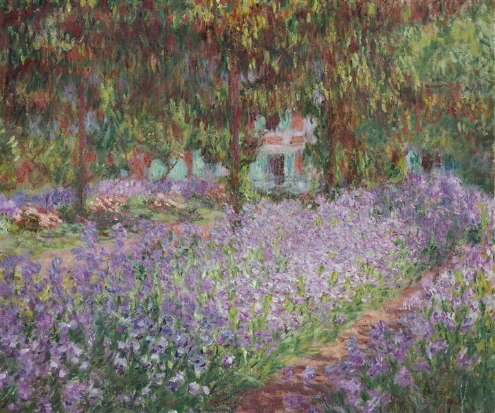
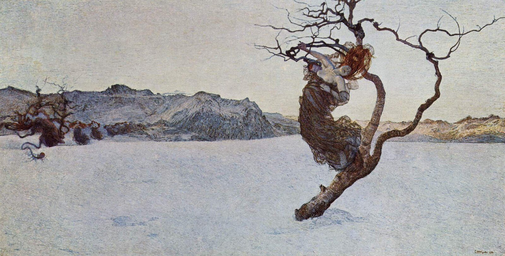

150 years of Austrian art - from Enlightenment sculpture to Viennese Modernism. Explore through interactive timelines, thematic narratives, and room-by-room discovery.







This virtual exhibition presents 18 masterworks from the Belvedere Museum's collection, arranged across six thematic rooms and two curated narrative paths. Each artwork includes descriptions tailored to different audiences - from quick introductions to in-depth scholarly analysis. Switch visual themes at any time using the button in the header.
Follow the chronological journey of artworks across Austrian art history - Open the timeline →